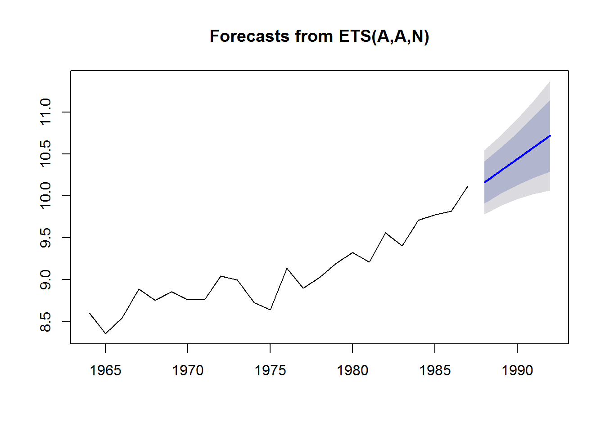
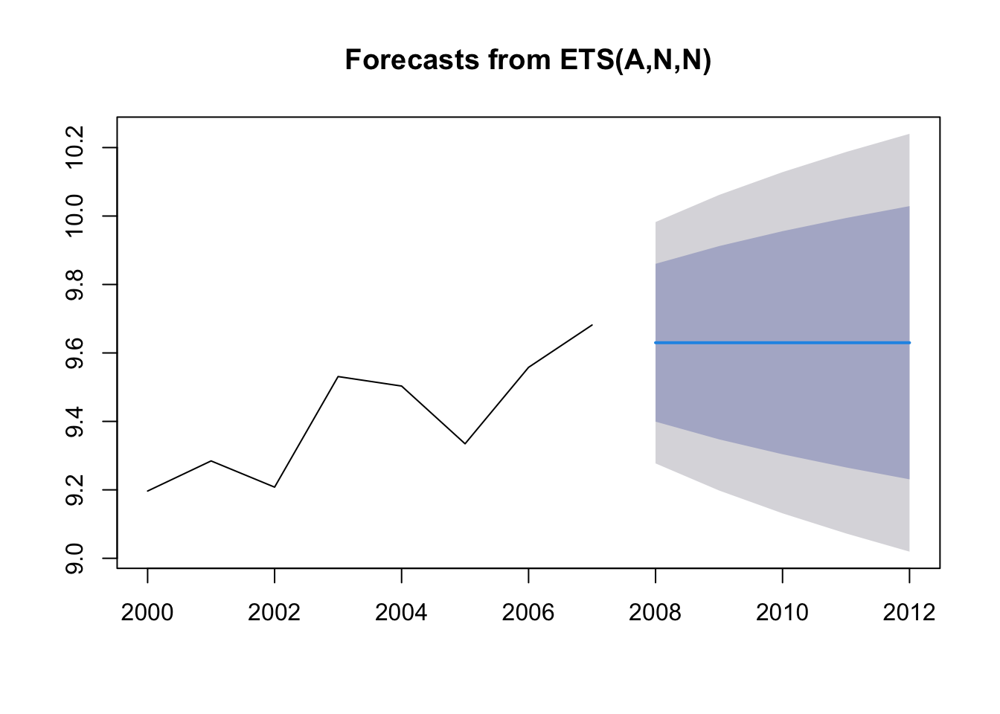

4.3 Fitting with ets()
The forecast package will fit a wide variety of exponential smoothing models. The main fitting function is ets():
ets(y, model = "ZZZ", < + many other arguments >)y : your data. A time series of responses.
model: what type of exponential smoothing model.
We are going to use ets() to fit three simple types of exponential smoothing models:
| model | “ZZZ” | alternate function |
|---|---|---|
| exponential smoothing no trend | “ANN” | ses() |
| exponential smoothing with trend | “AAN” | holt() |
| exponential smoothing choose trend | “AZN” | NA |
The alternate function does exactly the same fitting. It is just a ‘shortcut’.
4.3.1 Exponential smoothing with no trend
This is like the naive model that just uses the last value to make the forecast, but instead of only using the last value it will use values farther in the past also. The weighting fall off exponentially.
Load the data and forecast package.
load("landings.RData")fit <- forecast::ets(anchovy87ts, model="ANN")
fr <- forecast::forecast(fit, h=5)plot(fr)Look at the estimates
fit## ETS(A,N,N)
##
## Call:
## forecast::ets(y = anchovy87ts, model = "ANN")
##
## Smoothing parameters:
## alpha = 0.7065
##
## Initial states:
## l = 8.5553
##
## sigma: 0.2166
##
## AIC AICc BIC
## 6.764613 7.964613 10.2987754.3.2 The weighting function
4.3.3 Produce forecast using a previous fit
Say you want to estimate a forecasting model from one dataset and use that model to forecast another dataset or another area. Here is how to do that.
This is the fit to the 1964-1987 data:
fit1 <- forecast::ets(anchovy87ts, model="ANN")Use that model with the 2000-2007 data and produce a forecast:
dat <- subset(landings, Species=="Anchovy" & Year>=2000 & Year<=2007)
dat <- ts(dat$log.metric.tons, start=2000)
fit2 <- forecast::ets(dat, model=fit1)## Model is being refit with current smoothing parameters but initial states are being re-estimated.
## Set 'use.initial.values=TRUE' if you want to re-use existing initial values.fr2 <- forecast::forecast(fit2, h=5)plot(fr2)4.3.4 Naive model with drift
Fit a model that uses the last observation as the forecast but includes a trend estimated from ALL the data. This is what the naive model with drift does.
fit.rwf <- forecast::Arima(anchovy87ts, order=c(0,1,0), include.drift=TRUE)
fr.rwf <- forecast::forecast(fit.rwf, h=5)
plot(fr.rwf)The trend seen in the blue line is estimated from the overall trend in ALL the data.
coef(fit.rwf)## drift
## 0.06577281The trend from all the data is (last-first)/(number of steps).
mean(diff(anchovy87ts))## [1] 0.06577281So we only use the latest data to choose the level for our forecast but use all the data to choose the trend? It would make more sense to weight the more recent trends more heavily.
4.3.5 Exponential smoothing model with trend
The exponential smoothing model with trend does this. The one-year trend is \[x_t - x_{t-1}\] That is how much the data increased or decreased.
plot(diff(anchovy87ts),ylim=c(-0.3,.3))
abline(h=0, col="blue")
abline(h=mean(diff(anchovy87ts)),col="red")
title("0 means no change")If we take the average of all \(x_t - x_{t-1}\) we are using the average trend like the naive model with drift. We put an equal weighting on all trends.
But we could use a weighting that falls off exponentially so that we more recent trends affect the forecast more than trends in the distant past. That is what an exponential smoothing model with trend does.
4.3.6 Naive model with trend
If your training data are length \(T\), then a forecast for \(T+h\) is
\[\hat{x}_{T+h} = l_T + h \bar{b}\]
where \(\hat{b}\) is the mean of the the yearly changes in \(x\), so the mean of \(x_t - x_{t-1}\).
\[\hat{b} = \sum_{t=2}^T (x_t - x_{t-1})\]
4.3.7 Exponential smoothing model with trend
\[\hat{x}_{T+h} = l_T + h b_T\]
where \(b_T\) is a weighted average with the more recent trends given more weight.
\[b_t = \sum_{t=2}^T \beta (1-\beta)^{t-2}(x_t - x_{t-1})\]
Fit exponential smoothing with trend
fit <- forecast::ets(anchovy87ts, model="AAN")
fr <- forecast::forecast(fit, h=5)
plot(fr)
4.3.8 Decomposing your model fit
Sometimes you would like to see the smoothed level and smoothed trend that the model estimated. You can see that with plot(fit) or autoplot(fit).
autoplot(fit)
4.3.9 Forecast performance
We can evaluate the forecast performance with forecasts of our test data or we can use all the data and use time-series cross-validation.
Let’s start with the former.
4.3.10 Test forecast performance
Test against a test data set
We will fit an an exponential smoothing model with trend to the training data and make a forecast for the years that we ‘held out’.
fit1 <- forecast::ets(traindat, model="AAN")
h=length(testdat)
fr <- forecast::forecast(fit1, h=h)
plot(fr)
points(length(traindat)+1:h, testdat, pch=2, col="red")
legend("topleft", c("forecast","actual"), pch=c(20,2), col=c("blue","red"))We can calculate a variety of forecast error metrics with
forecast::accuracy(fr, testdat)## ME RMSE MAE MPE MAPE MASE
## Training set 0.0155561 0.1788989 0.1442712 0.1272938 1.600532 0.7720807
## Test set -0.5001701 0.5384355 0.5001701 -5.1678506 5.167851 2.6767060
## ACF1
## Training set -0.008371542
## Test set NAWe would now repeat this for all the models in our candidate set and choose the model with the best forecast performance.
Test using time-series cross-validation
Another approach is to use all the data and test a series of forecasts made by fitting the model to different lengths of the data.
In this approach, we don’t have test data. Instead we will use all the data for fitting and for forecast testing.
We will redefine traindat as all our Anchovy data.
tsCV() function
We will use the tsCV() function. We need to define a function that returns a forecast.
far2 <- function(x, h, model){
fit <- ets(x, model=model)
forecast(fit, h=h)
}Now we can use tsCV() to run our far2() function to a series of training data sets. We will specify that a NEW ets model be estimated for each training set. We are not using the weighting estimated for the whole data set but estimating the weighting new for each set.
The e are our forecast errors for all the forecasts that we did with the data.
e <- forecast::tsCV(traindat, far2, h=1, model="AAN")
e## Time Series:
## Start = 1
## End = 26
## Frequency = 1
## [1] -0.245378390 0.366852341 0.419678595 -0.414861770 -0.152727933
## [6] -0.183775208 -0.013799590 0.308433377 -0.017680471 -0.329690537
## [11] -0.353441463 0.266143346 -0.110848616 -0.005227309 0.157821831
## [16] 0.196184446 0.008135667 0.326024067 0.085160559 0.312668447
## [21] 0.246437781 0.117274740 0.292601670 -0.300814605 -0.406118961
## [26] NALet’s look at the first few e so we see exactly with tsCV() is doing.
e[2]## [1] 0.3668523This uses training data from \(t=1\) to \(t=2\) so fits an ets to the first two data points alone. Then it creates a forecast for \(t=3\) and compares that forecast to the actual value observed for \(t=3\).
TT <- 2 # end of the temp training data
temp <- traindat[1:TT]
fit.temp <- forecast::ets(temp, model="AAN")
fr.temp <- forecast::forecast(fit.temp, h=1)
traindat[TT+1] - fr.temp$mean## Time Series:
## Start = 3
## End = 3
## Frequency = 1
## [1] 0.3668523e[3]## [1] 0.4196786This uses training data from \(t=1\) to \(t=2\) so fits an ets to the first two data points alone. Then it creates a forecast for \(t=3\) and compares that forecast to the actual value observed for \(t=3\).
TT <- 3 # end of the temp training data
temp <- traindat[1:TT]
fit.temp <- forecast::ets(temp, model="AAN")
fr.temp <- forecast::forecast(fit.temp, h=1)
traindat[TT+1] - fr.temp$mean## Time Series:
## Start = 4
## End = 4
## Frequency = 1
## [1] 0.41967864.3.11 Testing a specific ets model
By specifying model="AAN", we estimated a new ets model (meaning new weighting) for each training set used. We might want to specify that we use only the weighting we estimated for the full data set.
We do this by passing in a fit to model.
The e are our forecast errors for all the forecasts that we did with the data. fit1 below is the ets estimated from all the data 1964 to 1989. Note, the code will produce a warning that it is estimating the initial value and just using the weighting. That is what we want.
fit1 <- forecast::ets(traindat, model="AAN")
e <- forecast::tsCV(traindat, far2, h=1, model=fit1)
e## Time Series:
## Start = 1
## End = 26
## Frequency = 1
## [1] NA 0.576663901 1.031385937 0.897828249 1.033164616
## [6] 0.935274283 0.958914499 1.265427119 -0.017241938 -0.332751184
## [11] -0.330473144 0.255886314 -0.103926617 0.031206730 0.154727479
## [16] 0.198328366 -0.020605522 0.297475742 0.005297401 0.264939892
## [21] 0.196256334 0.129798648 0.335887872 -0.074017535 -0.373267163
## [26] NA4.3.12 Forecast accuracy metrics
Now we can compute forecast accuracy metrics from the forecast errors (e).
RMSE: root mean squared error
rmse <- sqrt(mean(e^2, na.rm=TRUE))MAE: mean absolute error
mae <- mean(abs(e), na.rm=TRUE)